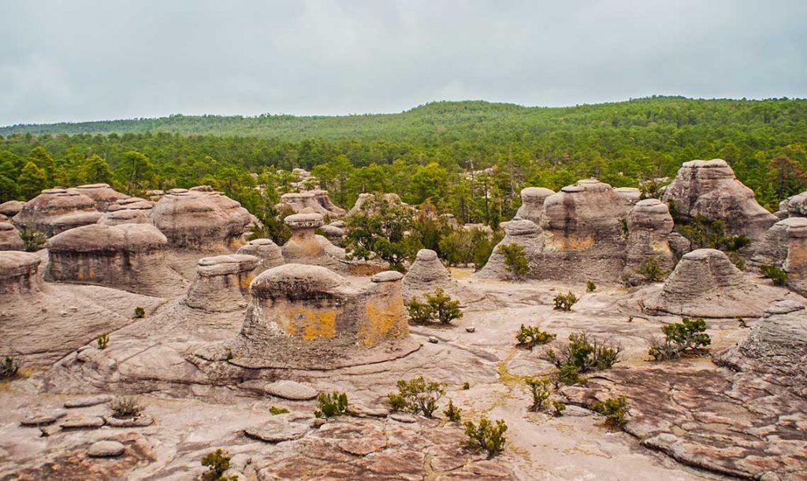

Bienvenidos a Durango

Durango es un estado de México que cuenta con hermosos paisajes, montañas, bosques, cascadas y espacios naturales que podemos visitar.
El ecoturismo permite disfrutar de estos lugares mientras aprendemos a respetar y proteger el medio ambiente.
¿Qué es el ecoturismo?
Es una forma de turismo responsable que busca conocer la naturaleza, proteger los ecosistemas y apoyar a las comunidades locales.
Descubrir lugares